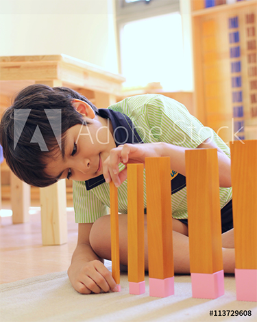

- The Montessori method has been time tested for 75 years and has achieved success throughout the world with children.
- Montessori is a positive environment for your children.
- In the scientifically prepared environment of the true Montessori school, the child develops the prime elements of character; freedom, concentration, independence, self-discipline, industry, sense of reality in an atmosphere of cooperation.
- The child’s natural development of language is utilized in the process of learning to read.
- Children work at their own pace and have the unique opportunity to fulfill their potential.
- Habits and skills developed in a Montessori classroom remain for a lifetime.
- Though much has been said about the academic achievements of Montessori children, the true value lies in the self-discipline, self-mastery and, love of learning the children achieve.
Why Montessori

We cannot create observers by saying ‘observe,’ but by giving them the power and the means for this observation and, these means are procured through education of the senses.
ABOUT MONTESSORI
Maria Montessori was born in 1870 and grew up to become Italy’s first female physician. Her medical work led her to work with children, especially challenging ones, through the University of Rome’s psychiatric clinic. Helping these children develop the skills to learn paved the way for her second career as an educator, founded on the idea that individual development would benefit from children being free to pursue their interests, at their own pace, in a specially prepared environment with specific teaching materials.
The reputation of the Montessori Method quickly spread, with schools opening in Switzerland, England, India, China, Mexico, Syria, and New Zealand. The first Montessori class was taught in the United States in 1912, by Alexander Graham Bell. Read more...
MONTESSORI EDUCATION AT CDC
- An emphasis on hands-on independent learning
- Enhanced social interaction
- All our teachers are certified montessori guides
- Parent-Teacher conferences twice a year
- Certified chef in the house to fulfill your needs
- Top of the line indoor playground
- Extended care
- Seasonal camps
- Open all year long
MONTESSORI VS. TRADITIONAL MODEL
MONTESSORI MODEL
- Values cognitive, psychological, social, and spiritual development
- The Teacher is the facilitator and guide
- Mixed-age grouping
- Children encouraged to teach, collaborate and help each other
- The child chooses own work
- Child sets learning pace
- The child can work where he/she is comfortable
TRADITIONAL CLASSROOM
- Emphasis on rote knowledge
- The teacher's role is dominant; the child is a passive participant
- Same age
- Most teaching is done by the teacher; collaboration discouraged
- Structured curriculum
- The child is given a specific time for work
- Child assigned seat; encouraged to sit still and listen during lessons
CONTACT US
We’d love to hear from you. Choose the most convenient method and we’ll get back to you as soon as we can.
Contact us